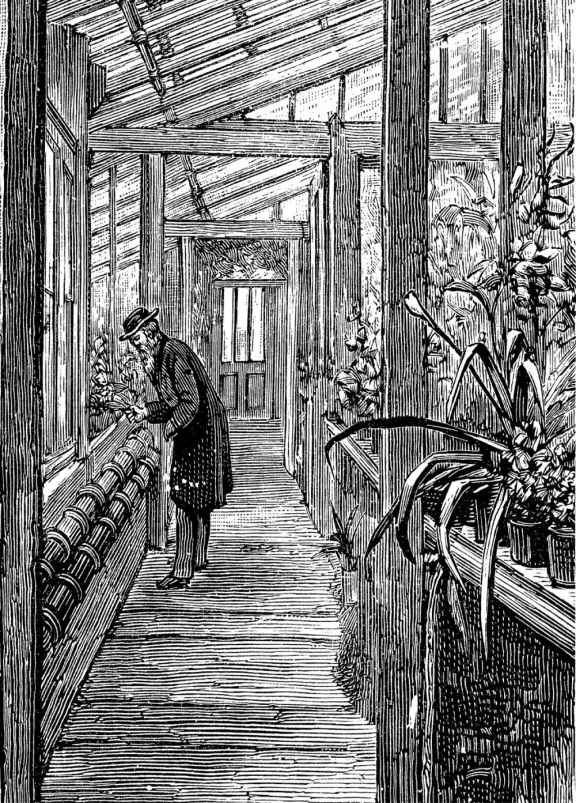

导读
贺雄雷
（中山大学生命科学学院 教授）
本书大体可以分为两部分来阅读。第一部分是对数十种人工驯化的动植物的历史及其形态或行为特征的描述，即使在今天，凭一己之力收集整理出如此全面详实的资料仍然是难以想象的。在此基础上，达尔文令人信服地阐述了人工选择可以造就新的物种。第二部分是达尔文对遗传和变异的思考。由于历史的局限性和问题本身的复杂性，他在这个问题上没有成功，但这并不妨碍我们跟随他的思路，从一个半世纪前一位顶级思考者的视角去剖析这一问题。从某种意义上来说，阅读第二部分能给读者带来更大的享受。

达尔文在Down House花房里。（木版画）
如果说达尔文5年环球旅行所看到的自然状态下物种的变异激发了对他物种起源的大胆猜想，那么对家养动植物的研究几乎为这一理论猜想提供了直接实验证据，因为这些家养动植物的驯化过程通常是有历史记载，并且与人们的直接生活生产经验吻合。达尔文很清楚这一点，曾计划将这一块内容作为《物种起源》的开篇。由于时间和篇幅上的考虑，他在这一问题上的大量调查和思考并没有在1859年出版的《物种起源》中体现，因此9年之后有了本书。
本书大体可以分为两部分来阅读。第一部分是对数十种人工驯化的动植物的历史及其形态或行为特征的描述，即使在今天，凭一己之力收集整理出如此全面翔实的资料仍然是难以想象的。在此基础上，达尔文令人信服地阐述了人工选择可以造就新的物种。第二部分是达尔文对遗传和变异的思考。由于历史的局限性和问题本身的复杂性，他在这个问题上没有成功，但这并不妨碍我们跟随他的思路，从一个半世纪前一位顶级思考者的视觉去剖析这一问题。从某种意义上来说，阅读第二部分能给读者带来更大的享受。
这是一部巨著，无论从内容还是从篇幅来看。在快节奏的今天要完成这样一本书的阅读不容易，坦白说我是和我的助手刘黎博士以及我的研究生们一起完成本书的阅读和导读的撰写。我们最大的一个感触是在那个中国人还留着长辫子的年代，达尔文一个人已经整理出如此系统、几乎是包罗万象的资料，并从中演绎归纳出一个普适性的规律。不过有意思的是，达尔文对规律普适性的追求可能是他在遗传变异这一问题上不成功的原因。没有证据表明达尔文读过孟德尔的论文，但可以想象的是，即使他读过，也很有可能认为豌豆上表现出来的这些规律不具代表性，因为大部分表型的遗传乍看并不符合那样的规律。所以，孟德尔单点突破，不问其他的思路是勇敢的，也是幸运的。而对这些前辈高人的谈论给我们的启示是，在对未知世界的探讨中不需要拘泥于任何既定模式。